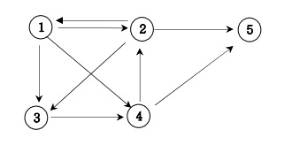

방향그래프가 주어지면 1번 정점에서 N번 정점으로 가는 모든 경로의 가지 수를 출력하는 프로그램을 작성하세요. 아래 그래프에서 1번 정점에서 5번 정점으로 가는 가지 수는 1 2 3 4 5, 1 2 5, 1 3 4 2 5, 1 3 4 5, 1 4 2 5, 1 4 5 총 6가지입니다.
▣ 입력설명 첫째 줄에는 정점의 수 N(1<=N<=20)와 간선의 수 M가 주어진다. 그 다음부터 M줄에 걸쳐 연결정보가 주어진다.
▣ 출력설명 총 가지수를 출력한다.